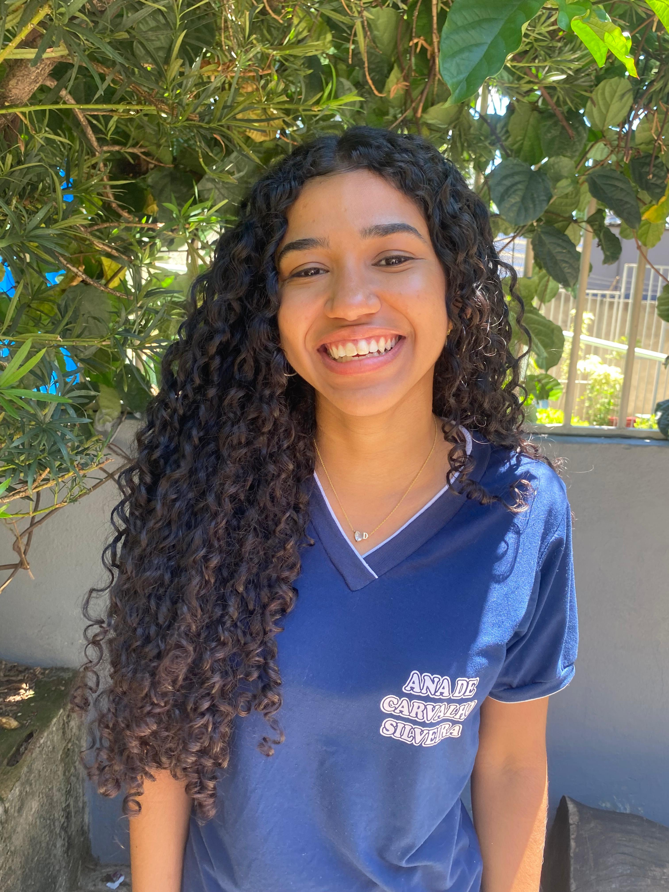

No curso, Maria Eduarda de Souza aprendeu sobre HTML, CSS, manutenção e JavaScript. Ela também teve contato com o Arduino, que considerou uma das partes mais difíceis, mas reconheceu que foi uma experiência importante para o seu aprendizado e crescimento na área de tecnologia. Durante as atividades, Maria Eduarda se destacou especialmente nas partes de HTML e CSS, conteúdos que mais despertaram seu interesse. Ela contou que o momento mais marcante foi quando estava mexendo nesses códigos, pois pôde compreender melhor como as páginas da internet são criadas e estruturadas. Maria Eduarda acredita que aprender sobre essas linguagens pode melhorar o seu currículo e abrir novas oportunidades profissionais no futuro. Para ela, dominar a tecnologia é algo essencial nos dias de hoje, já que essa área está em constante crescimento. Quando perguntada se acha difícil, ela respondeu que não, mas reconhece que é preciso estudar muito e prestar atenção nas explicações para conseguir evoluir. Por fim, Maria Eduarda afirmou que o aprendizado no curso a incentiva a continuar tentando e se dedicando cada vez mais aos estudos.